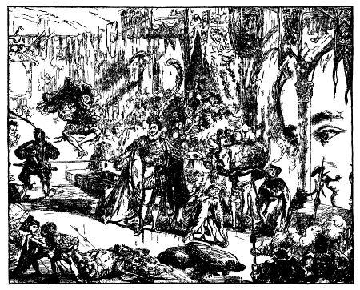
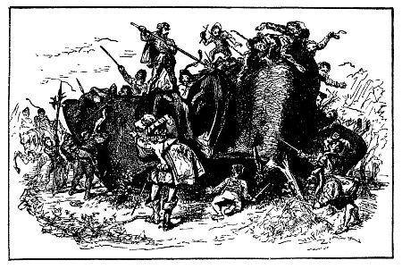

Tôi đã gửi lên nhà vua không biết bao nhiêu đơn từ để xin được tự do, vì vậy vua đành lòng nêu vấn đề, trước hết ở Hội đồng tư vấn, sau ở hội nghị họp phiên toàn thể. Ngài không gặp một sự phản đối nào, trừ ý kiến của ông Skyresh Bolgolam, coi tôi là một kẻ tử thù, tuy tôi không hề trêu ghẹo ông ta một tí nào. Nhưng tất cả những người khác đều tán thành và vua cũng ủng hộ. Cái lão Bolgolam này là galbet, nghĩa là đô đốc thủy quân. Lão được vua tin cẩn, cư xử khéo léo, nhưng tính tình khoằm khoặm và hay chua chát. Dần dần, lão cũng chịu theo ý kiến của toàn thể Hội đồng, nhưng với điều kiện là chính lão phải là người thảo những khoản và những điều kiện mà tôi phải tuân theo. Những điều khoản này đã được đích thân Bolgolam cùng hai viên thư ký và nhiều viên chức cao cấp khác đọc cho tôi nghe. Sau đó, tôi phải tuyên thệ, trước hết, theo tục lệ của xứ sở, rồi theo phương thức mà luật pháp nước Lilliput quy định. Tôi phải lấy tay trái cầm lấy bàn chân phải, đặt bàn tay phải trên đầu, ngón tay cái chạm vào tai bên phải. Chắc bạn đọc muốn biết văn phong và cách dùng tiếng của nhân dân xứ này, và muốn biết những điều khoản tôi phải tuân theo để được tự do, nên tôi cố gắng hết sức dịch toàn bộ bản hợp đồng như sau:
"Golbasto Momarem Evlame Gurdilo Shefin Mully Ully Gue, hoàng đế vô cùng dũng mãnh nước Lilliput, niềm hạnh phúc và sự khủng khiếp của toàn vũ trụ, của tất cả các vương quốc kéo dài tới năm nghìn clustrugs[1] đến mãi tận cùng thế giới, vua của những ông vua, vĩ đại hơn tất cả những người vĩ đại, chân đạp đến tận trung tâm trái đất, đầu đụng mặt trời, chỉ gật đầu một cái là đầu gối các vua chúa phải run rẩy, đáng yêu như mùa xuân, dễ chịu như mùa hè, mát mẻ như mùa thu, đáng sợ như mùa đông, hoàng đế cao cả đề nghị Người-Núi vừa đến vương quốc chúng ta phải tuân theo những điều khoản sau đây, sau buổi lễ tuyên thệ long trọng này:
I. Người-Núi không được ra khỏi xứ sở của ta nếu không được giấy phép có áp triện của ta.
II. Ông ta không được vào thủ đô nếu không được lệnh. Khi có lệnh nhân dân thành phố sẽ được báo trước hai giờ, để ở trong nhà.
III. Nguời-Núi sẽ chỉ được đi chơi trên đường quốc lộ và không được đi hoặc nằm trên đồng cỏ và trên ruộng lúa.
IV. Khi đi trên đường quốc lộ, ông ta phải hết sức chú ý tránh giẫm lên những thần dân yêu quý của ta cũng như những xe cộ, xe ngựa trên đường, và không được bắt một người nào cầm trong tay nếu không được người ấy ưng thuận.
V. Khi có một công văn khẩn cấp, Người-Núi sẽ có nhiệm vụ để người giao liên và ngựa của anh ta vào túi đi sáu ngày, mỗi tuần trăng một lần, và mang trả lại ta nguời giao liên không sứt mẻ gì cả.
VI. Ông ta sẽ là bạn đồng minh của ta chống lại kẻ thù của ta trên đảo Blefuscu, và làm hết sức mình để tiêu diệt đoàn chiến hạm mà họ đang xây dựng để chống lại ta.
VII. Người-Núi sẽ dùng thời giờ nhàn rỗi giúp thợ thuyền trong việc nhấc những hòn đá rất nặng để hoàn thành những bức tường vườn thượng uyển và nhà cửa nơi cung đình.
VIII. Người-Núi trong trong hai tuần trăng nữa sẽ vẽ xong một bản đồ chính xác về đường biên giới các vương quốc của ta, bằng cách đo bước chân dọc theo bờ biển.
Sau cùng, sau khi tuyên thệ tuân theo tất cả điều khoản trên đây, Người-Núi sẽ được cung cấp hằng ngày số thịt và đồ uống bằng khẩu phần cảa 1728 thần dân của ta, được tự do đến gần ta, và được hưởng mọi quyền ưu đãi.
Giấy này làm tại cung Belfaborac, ngày thứ mười hai, tuần trăng thứ chín mươi mốt triều đại ta trị vì.
Tôi tuyên thệ và chấp nhận các điều khoản trên, thật là sung sướng và thỏa mãn, tuy rằng một vài điều khoản chẳng có gì vinh dự cho tôi lắm. Đó là kết quả việc làm của lão đô đốc Bolgolam tinh ma. Xong đâu đấy, người ta mở xích cho tôi và tôi được tự do. Đích thân đức vua tới dự buổi lễ. Tôi quỳ xuống dưới chân ngài bày tỏ lòng biết ơn. Song ngài ra lệnh cho tôi đứng dậy và sau nhiều lời rất dễ thương mà tôi không kể lại ở đây vì sợ có người cho là khoe khoang, ngài bảo hy vọng tôi sẽ là một người đày tớ có ích, tôi sẽ được hưởng nhiều ưu đãi hiện tại cũng như sau này.
Bạn đọc đã nhận thấy điều khoản cuối cùng trong bản giao ước cho tôi được tự do, quy định số lượng thịt và đồ uống đủ nuôi 1728 người Lilliput. Ít lâu sau, tôi hỏi một người bạn ở triều đình xem người ta làm thế nào mà tính được một con số chính xác như vậy. Tôi được biết những nhà toán học của đứa vua dùng cái thước một góc hình tròn để đo chiều cao của tôi, và thấy tỉ lệ chiều cao giữa tôi với họ là mười hai trên một. Và, dựa trên tính đồng dạng giữa các hình, họ kết luận thân hình của tôi chứa được ít nhất bằng 1728 người Lilliput, bởi vậy dạ dày tôi cần số lương thực, thực phẩm bằng 1728 người Lilliput. Qua ví dụ trên đây, bạn đọc có thể thấy tài năng của dân tộc này, tinh thần tiết kiệm, lo xa và chính xác của một ông vua vĩ đại như vậy.

[1] Tức là mười hai dặm đường chu vi.